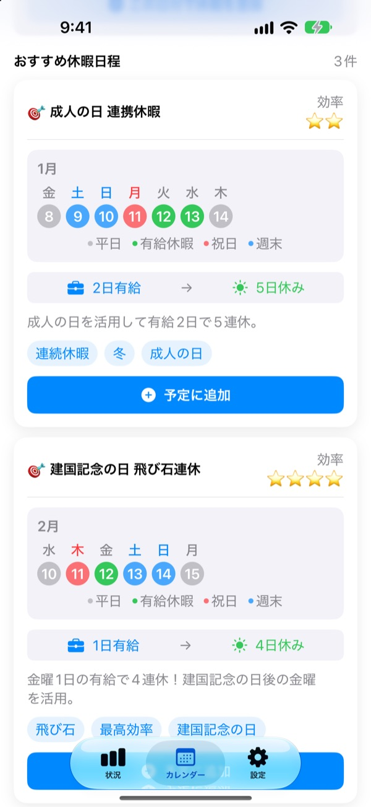
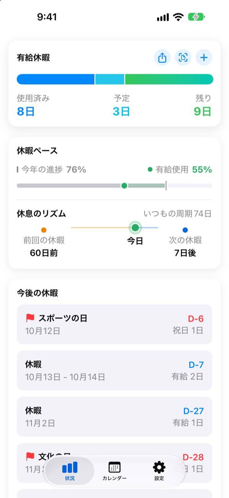
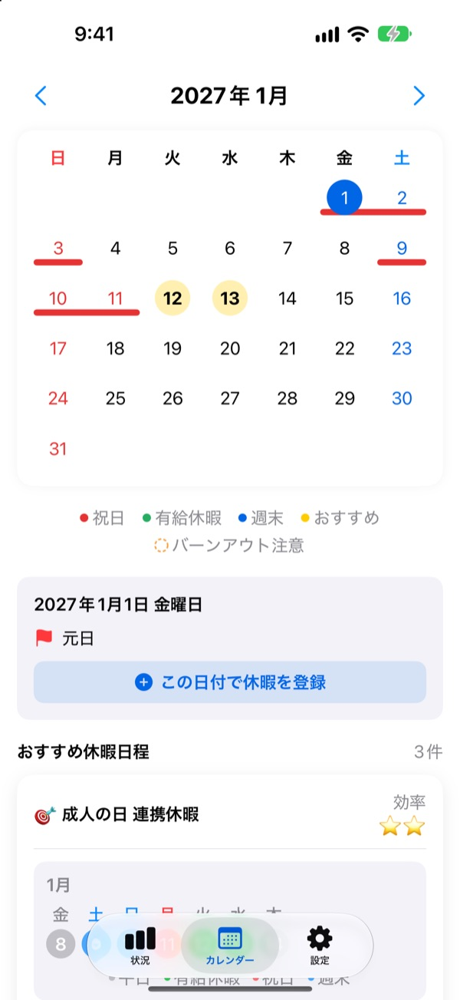
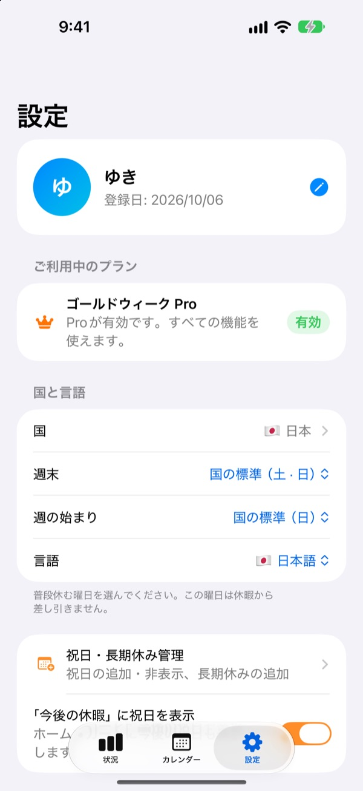

少ない有給で、
長い連休を
Goldweek は祝日と週末を組み合わせて、どの日に有給を取れば一番長く休めるかを教えてくれます。カレンダーを1枚ずつめくって数える必要はもうありません。
ダウンロード無料。有給の記録とおすすめの閲覧はずっと無料です。

有給何日で、何連休になる？
取れる有給の日数を選んでください。これから来る祝日の中から、その日数で一番長く休める連休をお見せします。
カレンダーをめくって休みを数えるのに疲れていませんか？
木曜が祝日なら金曜に有給を入れるべきか、来月の連休の前後につなげるべきか。何枚もめくって数えているうちに、結局なんとなく休みを入れてしまい、年度末には有給が消えていく。Goldweek がその計算を代わりにして、同じ有給でより長く休める日を先に見せます。
残りの有給がひと目でわかる
付与日数、取得日数、残り日数をひとつの画面で確認できます。今年がどれだけ過ぎたかと、有給をどれだけ使ったかを並べて見せるので、ため込みすぎていないかがすぐにわかります。
アプリを開かなくても、ホーム画面のウィジェットで残りの有給と次の休みが見られます。

カレンダーからそのまま登録
祝日、有給、おすすめの連休がカレンダー上に色分けで表示されます。日付をタップすれば休みをすぐに追加・編集でき、半休や時間単位も記録できます。
会社の休暇履歴の画面を撮った写真から、過去の記録をまとめて取り込むこともできます。

自分の国、自分の働き方で
日本、韓国、アメリカ、ヨーロッパ、南米、オセアニアまで42か国の祝日を収録。州や地域で祝日が違う国は自分の地域を選び、リストにない国は祝日を自分で入れて使えます。
週末の曜日や週の始まり、固定勤務・パートタイム・シフト勤務も選べます。

はじめ方は3ステップ
- 1
国と有給日数を設定
最初に開いたとき、国と年間の有給日数を選ぶだけです。
- 2
おすすめを選ぶ
カレンダータブのおすすめ休暇から、気に入った連休を予定に追加します。
- 3
取った休みを記録
日付をタップするか、休暇履歴の写真からまとめて取り込みます。
こう計算します
- 全休
- 1日ずつ引かれます
- 半休
- 0.5日引かれます
- 4分の1休
- 0.25日引かれます
- 時間単位
- その日の勤務時間に合わせて引かれます
- 病気休暇・特別休暇・出張
- 残りの有給からは引きません
- ボーナス休暇
- 代休や報奨休暇など別にもらった休みを、有効期限つきで別に管理します（プロ）
年間の有給日数と、有給の年度が始まる月は設定でいつでも変えられます。
休む習慣は無料、計画を任せるなら有料
無料
- 全休・半休・4分の1休・時間単位の記録と残り日数
- 42か国の祝日、自分の祝日と長期休み
- 今年のおすすめをすべて見る、うち3件まで予定に追加
- 休む間隔のお知らせ、通知、ホーム画面ウィジェット
- 写真で休暇を登録
- iCloud バックアップ、家族と予定を共有
プラス・プロ
- プラス：最適な年間プランナー
- プラス：おすすめを無制限に追加、昨年と来年のおすすめ
- プラス：カレンダーアプリに書き出す
- プロ：プラスのすべてに加え、ボーナス休暇、種類ごとの年間上限と繰り越し
- プロ：学校カレンダーの取り込み、カレンダーの自動検出
- プロ：家族いっしょの休み、家族の記念日
それぞれ年額サブスクリプションか、一度だけ払う買い切りから選べます。
年額サブスクリプションは、期間終了の24時間前までに解約しないと自動更新されます。設定 > Apple アカウント > サブスクリプションからいつでも解約できます。
よくある質問
有給が正しく計算されていない気がします。
設定で有給の年度が始まる月と年間の有給日数を確認してください。半休（0.5日）と4分の1休（0.25日）は自動で引かれ、病気休暇・特別休暇・出張のように差し引かない種類は残り日数に影響しません。それでも合わない場合はメールでお知らせください。
カレンダーに休みが表示されません。
取り消した休みはカレンダーに表示されません。休暇管理の画面でその記録の状態を確認してください。アプリを最新版にすると直ることもあります。
ボーナス休暇はどう登録しますか？
状況タブの + から休暇管理の画面を開き、下のボーナス休暇から追加します。代休、報奨休暇、リフレッシュ休暇などの種類を選び、日数と有効期限（任意）を入れてください。ボーナス休暇は通常の有給とは別に管理されます。
購入したのに機能が使えません。
設定タブ下の「購入を復元」をタップしてください。App Store にサインインしている Apple アカウントで購入が復元されます。それでも解決しない場合はメールでご連絡ください。
アプリを削除するとデータは消えますか？
データは端末に保存されているため、アプリを削除するとすべて消えます。iCloud バックアップをオンにしておけば、あとで復元できるコピーが残ります。
祝日を自分で追加したり、非表示にしたりできますか？
はい。設定の祝日・長期休み管理から、自分の祝日を追加したり、標準の祝日を非表示にしたりできます。
どの国に対応していますか？
42か国の祝日を収録しています。設定で国（州や地域で祝日が違う国は地域まで）を選ぶと、カレンダーにすぐ反映されます。リストにない国は祝日を自分で入れて使うか、アプリからフィードバックを送って対応をリクエストできます。
記録はどこに保存されますか？
入力した内容は端末とご自身の iCloud にだけ保存されます。開発者が受け取るのは、匿名の利用統計、匿名のエラー診断、そして直接送っていただいたフィードバックだけです。
上記で解決しない問題、機能のご提案、不具合は leeo@kakao.com までお送りください。通常1〜2営業日以内にお返事します。